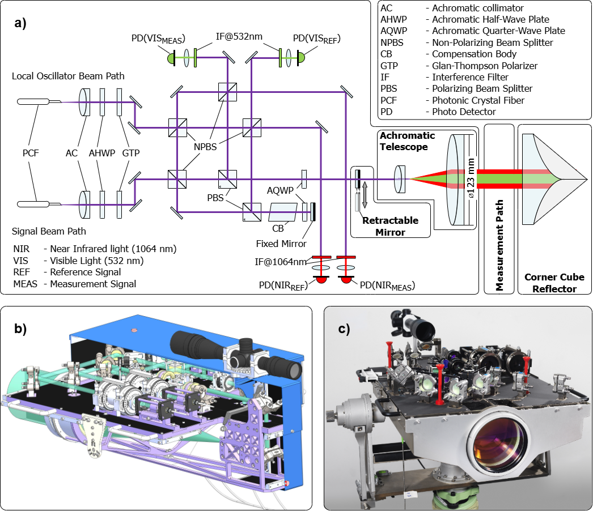
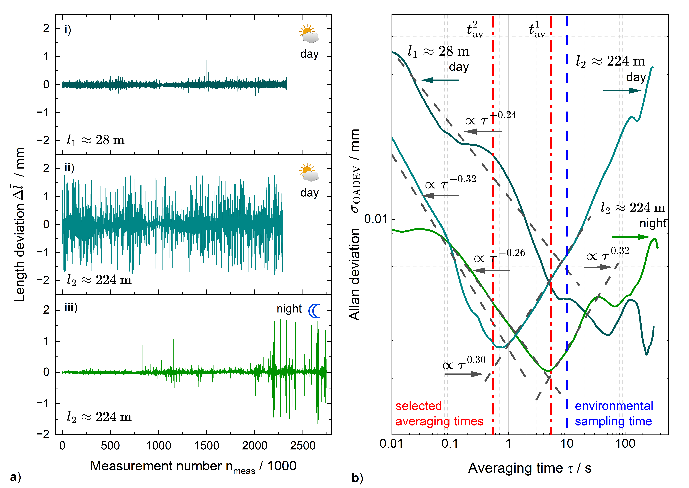
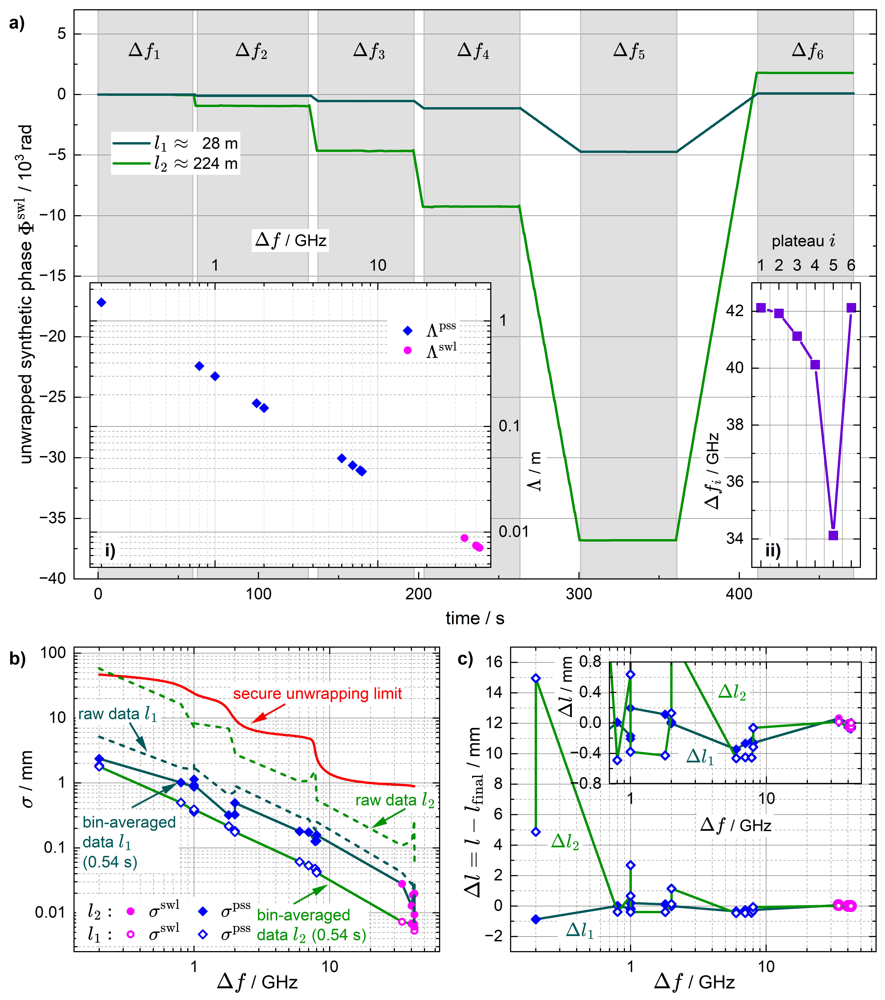
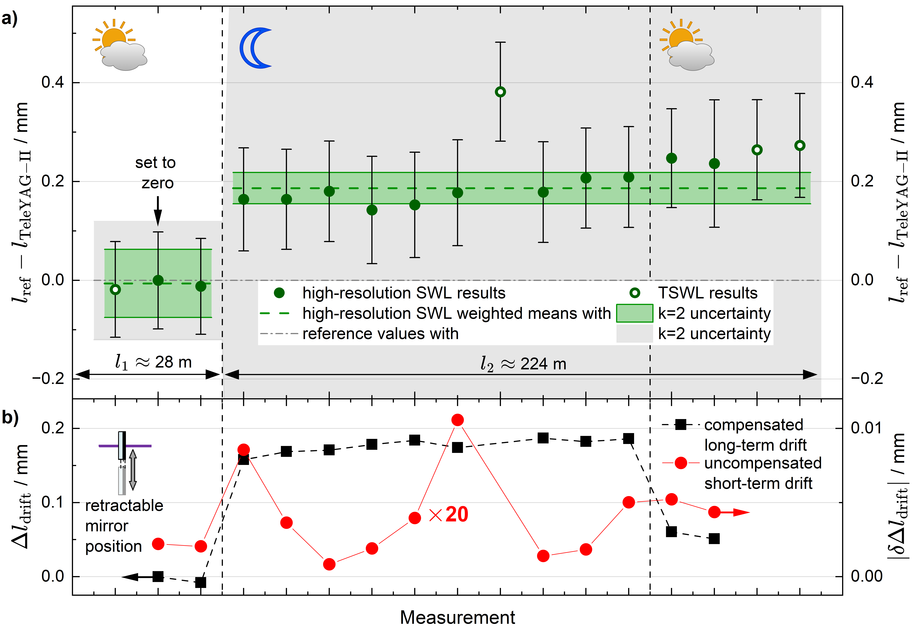

基于可调合成波长与伪超合成波长的无量程限制室外绝对距离干涉测量：TeleYAG-II干涉仪
摘要
绝对距离干涉测量要求无量程限制的非模糊距离，才能实现真正的绝对测量。可调合成波长干涉测量利用有限数量的光源和标准干涉仪光路，即可构建伪超合成波长。该方法便于生成一系列可依次投入使用的合成波长，最终将宏观无模糊距离与微观干涉测量精度相结合。我们已在TeleYAG-II干涉仪中实现并验证了这一概念，该仪器设计为用于校准大地测量基线的、具有国际单位制（SI）溯源性的标准装置。系统采用两台Nd:YAG激光器作为光源，其频率差由一个多功能光学锁相环控制。针对野外条件下的鲁棒性进行了专门设计，该外差干涉仪通过一次室外测量 campaign 得到了验证。结果表明了该方法的有效性：在224 m距离上无需辅助长度测量，即可达到0.13 mm的扩展测量不确定度。
关键词
absolute distance interferometry, tunable synthetic wavelength interferometry, pseudo-supersynthetic wavelength interferometry, multi-wavelength interferometry, heterodyne interferometry, length metrology, surveying1 引言
大地测量学与测绘学以高准确度的长距离测量为基础。从日常地籍工作 [1, chap. VI]，到灾害与变形监测 [2, chap. 13]，再到大地测量参考框架的维护 [3, p. 242]，无论是光学测距还是基于GNSS的测距，长距离测量都是这些学科不可或缺的要素。为这类测量提供溯源性与验证一直是几何量计量面临的挑战 [4, 5]。一种技术开放的验证策略，是采用具有高准确度已知参考距离的大地测量基线 [6, 7, 8, 9]。然而，要以足够的准确度建立这些参考距离，就需要合适的参考标准器。有两个根本性难题需要解决。第一，如何在一台仪器中兼得长距离测量能力与高准确度？第二，如何构造这样一台仪器，使其能够经受室外测量的考验，即真正具备野外作业能力？
1923年，Väisälä提出使用白光干涉测量，通过对高长度准确度的参考标准进行光学倍增来实现长距离测量[10]。芬兰地理空间研究所至今仍成功应用Väisälä白光干涉仪校准其Nummela基线，在最长至 [9]的距离上实现亚毫米级准确度。但该方法存在一些严重缺点。首先，它要求绝对稳定的环境条件，这意味着测量活动会持续数周，因而经济可行性较低。此外，它只能用于专用基线，因为它只能测量初始参考长度的整数倍。Baselga等开发了一种基于全球导航卫星系统（GNSS）的、可严格溯源至SI的测距方法，测量范围可达。尽管该技术不需要通视，也不依赖辅助长度预值，但超过十小时的观测时间被认为是最低要求[11]。利用过去几十年光子学和电子学的进展，近年来已经演示了多种不同的光学测量方法。Guillory等最近将经典射频（RF）调制概念推向了新的准确度水平，这或许是就准确度、适用性和现场能力而言最先进的方法[12, 13, 14]。但其他一些光学测量原理——也许成熟度较低——近年来也证明了现场适用能力。基于飞秒激光器模式间拍频[15, 6, 16]或双光梳异步光脉冲采样[17, 18]的系统已成功在户外部署。Wu等利用基于双电光梳的双光梳多外差干涉测量[7]，演示了最远至的干涉绝对测距。借助TeleYAG干涉仪，我们课题组演示了在最长至 [19, 20]的距离上的合成波长干涉测量。然而，所有更现代的光学方法都需要距离的粗略先验知识。本工作的目标是克服多波长干涉测量（MWLI）固有的模糊性。为此，我们提出一种新的MWLI方法：将可调合成波长干涉测量与伪超合成波长干涉测量相结合。该方法在第2节中介绍并详细阐述。该方法在新TeleYAG-II干涉仪中实现，该干涉仪是TeleYAG仪器的后继型号。后者证明了外差干涉测量可应用于光学长距离测量问题。然而，原始仪器存在严重缺陷，使其无法用作原级标准。在野外条件下，光源与干涉仪探头的装调高度不稳定，测量过程中需要频繁重新装调。数据必须针对异常值进行大量滤波。没有固定的物理参考点，而且最重要的是，为正确解卷绕，长度预值必须准确到毫米级。作为欧洲计量研究项目“Geometre”[21]的一部分，借鉴从TeleYAG仪器中获得的经验教训，开发了现场能力更强的测距仪。在光源和干涉仪探头的仪器设计上投入了极大精力。第3节对此进行了详细讨论。用于表征仪器并阐述方法的典型数据汇编于第4节。第5节推导了测量不确定度预算，随后第6节给出更一般的讨论和结论。
2 方法
在本节中，我们针对实用的绝对距离干涉测量提出伪超合成波长干涉测量的概念。作为基础，首先在第2.1节回顾固定合成波长干涉测量中成熟的迭代解缠概念，随后在第2.2节将其扩展为可调合成波长干涉测量的新概念，最后在第2.3节扩展为伪超合成波长干涉测量。
2.1 合成波长干涉测量
对于给定的几何距离 和相位折射率 ，在时刻 用光学真空波长 测得的干涉光相位 由下式给出
| (1) |
原则上，光相位 只能以 为模加以分辨，因而干涉测量的非模糊范围（NAR）被限制为光学波长 的一半。在经典干涉测量中，非模糊范围是通过沿待测距离移动反射镜并计数沿光路的数目完整的周期（或条纹）来扩展的。然而，基线的校准需要测量数百米乃至数千米的距离 [6, 8]。在野外条件下，连续测量实际上无法实现。必须进行真正的绝对测距，即从起点到终点一次完成的测量。如何对这一（高精度）测量进行解缠，从而把宏观尺度上的意义与微观尺度上的准确度结合起来，正是绝对距离干涉测量领域梦寐以求的目标。为此已发展出多种方法 [22, 23]。将多台激光器的相位信息组合起来以扩大非模糊范围的想法，在 Michelson 的首批开创性论文 [25] 问世后不久就已由 Benoît [24] 提出。合成波长（SWL）干涉测量是多波长激光干涉测量（MWLI）的一种变体 [26, 22, 23]，其基本思想是在同一时刻把用不同波长 的干涉仪测量所得的相位信息 和 结合起来：
| (2) |
代入式（1），可以容易地导出
| (3) |
并引入双色群折射率
| (4) |
以及合成波长
| (5) |
合成波长 的一半决定了组合测量非模糊范围（NAR）的大小。对于特定且高度稳定的激光器与环境，例如量块干涉仪，de Groot 在 1994 年表明，该 NAR 可扩展几个数量级 [27]，但在一般情况下，NAR 严格限制为 。从这个角度看，较长的合成波长似乎更有利。然而，由式 (3) 可知，测距的不确定度 与合成波长 成正比。简言之，NAR 越长，测量结果的不确定度越大。为将宏观 NAR 与微观准确度结合起来，多波长干涉测量（MWLI）中的一种成熟策略是用 个不同的激光波长 同时测量几何距离 。对于所测光学相位 与 和 的每一对组合，均可按式 (2) 计算合成相位。这些合成相位可按序列排序，
| (6) |
其中相应的合成波长根据式 (5) 确定，
| (7) |
fulfill
| (8) |
且根据 (3) 导出的距离 的相应不确定度 也遵循这一顺序。
| (9) |
这些测量序列可用于利用 [28]，以较大非模糊范围的较粗测量结果迭代展开更准确的测量。
| (10) | |||||
| (11) |
其中 函数返回使 成立的最大整数值 。
2.2 光锁相环（OPLL）介导的可调合成波长干涉测量
由式 (8) 和式 (9) 定义的这种波长序列，其实验实现需要复杂的激光系统。文献中的实例基于 CO2 激光器 [29, 30]、电光梳 [31, 32, 33, 34, 35] 或光纤梳 [36, 37, 38]。使用可调谐激光源的干涉测量原则上可获得不受限的 NAR。使用可调谐波长源有时被用于绝对测距 [39, 40, 41, 42]（通常称为扫频干涉测量（FSI）或可变合成波长干涉测量（VSW））。此处的“合成波长”，即频率变化的带宽，决定并常常限制测距不确定度。这类方法还以对频率变化期间测量装置的不稳定高度敏感而著称。为提高这些绝对测量的准确度，FSI 值有时被用作 SWL 测量的粗略预值 [28, 43, 44, 45]。
数百米量级上的绝对距离干涉测量对激光源的时间相干性提出了严格要求，在距离为时要求线宽低于。像 Nd:YAG 激光器这样的二极管泵浦固体激光器满足这一要求。其约的有限调谐激光振荡带宽允许形成合成波长。如图 1a 所示，可通过稳定频率差
| (12) |
在两个独立激光谐振器之间使用光学锁相环（OPLL） [19, 20, 46, 47, 48]。将代入式 (5)（其中表示真空光速），两台激光器之间的合成波长可表示为[20]
| (13) |
Gelmini 等在 20 世纪 90 年代指出，式 (13) 为利用频率差可控[46, 47]的激光对构造更多合成波长提供了可能。原则上，OPLL 频率可在两个谐振器的激活激光介质内自由选择，并且必须能被合适的光电二极管电路检测到。如果第 2.1 节所述的合成倍数能够被连续测量，便有可能生成满足条件 (8) 和 (9) 的、具有不同合成波长的一系列测量结果，其实现只需改变超高频（SHF）发生器的频率（见图 1）。因此，两台 Nd:YAG 激光器之间的 OPLL 稳定可充当高效的多波长发生器，并且就本工作而言，可直接用于可调合成波长干涉测量（TSWL）。
2.3 伪超合成波长干涉测量
上一节 2.2 所述的多波长发生器能够在如下范围内生成合成波长：该范围在较短端受两个激光谐振器的增益带宽限制（或者，如果该带宽更小，则受光电探测器的带宽限制），在较长端受中频限制。然而，要完全实现例如从 () 到 () 的调谐范围，仍存在实际限制。首先，对所有上述值依次进行测量会耗费相当长的时间。此外，在实践中，由于不可避免的跳模（此处典型的跳模自由光谱范围为），Nd:YAG 激光源无法在整个增益带宽内完全连续调谐。这进一步增加了测量的复杂性并延长了测量时间，意味着在实践中无法完整实现使用该方法生成合成波长序列。
幸运的是，通过计入在不同时刻 和 利用两个具有高空间分辨率的合成信号（ 和 ）测得的相位，可以进一步增大无模糊范围（NAR）。这样便可将两次无模糊范围处于毫米量级的测量组合起来，使可无模糊确定的测量范围扩展到米量级（且不超出谐振器的无跳模区域）。设两个合成相位为 和 ，其中 由下式确定
| (14) |
与式(2)完全类似，将两者相减可得相位差：
| (15) |
由于它与合成相位相似，我们提出“伪超合成（PSS）相位”这一术语。进一步地，按照式(5)和(13)应用合成波长模型，伪超合成波长
| (16) | |||||
| (17) |
可由此定义。几何长度 可由已知的 PSS 相位与波长按下式求得
| (18) |
其中 PSS 折射率为
| (19) |
这一形式体系的优势可由式(17)看出：利用相继的合成信号进行测量，且这些信号的频率差 与 彼此略有失谐但并不相同，即可构造出很长的 PSS 波长 （与 成反比），从而通过加入 PSS 波长，把式(6)的波长序列扩展到更长的无模糊范围
| (20) |
with
| (21) |
and
| (22) |
图 1b 和 c 展示了如何从连续测量（图 1b）中构造这样一组三个波长（一个 PSS 波长、两个合成波长（SWL）），以及随后如何利用迭代算法确定几何长度（图 1c）。
考虑双激光器系统的极限情形颇有启发性：其中激光器1被稳频，而激光器2被调频以测量固定距离 。 若对 和 时刻采集的相位测量值采用 PSS 模型进行分析，则根据式(14)，PSS 相位差等价于仅由激光器2的光学相位计算得到的
3 实验装置
为实现实地作业能力，TeleYAG-II 干涉仪被划分为三个功能单元。第 3.1 节所述的相位检测与激光器稳频，构成了基于多波长激光干涉（MWLI）测距的计量学原理基础。第 3.2 节详述了适用于现场的光学干涉仪设计，该设计利用经光子晶体光纤（PCF）传输、空间上彼此分离的输入光束，实现双波长测距干涉。第 3.3 节随后详述了专用相位处理电子学与基于 FPGA 的仪器系统，其设计用于从这些外差载波中采集并提取相位信号。
3.1 光源：基于 FPGA 的光学锁相环
TeleYAG-II 绝对测距干涉仪基于两台二极管泵浦固体（DPSS）Nd:YAG 环形振荡器（Innolight Prometheus 20NE），可在近红外（NIR）1064 nm 处提供光功率为 1 W 的基波发射，并通过二次谐波产生（SHG）在 处提供 的可见光（VIS）。SHG 过程确保相对基波具有固有的光学相位稳定性。Nd:YAG 环形谐振器的低固有噪声和长相干长度，使得在光纤延迟线 [49, 50] 中可实现超过 100 km 的可观测干涉，从而使这些光源特别适合大地测量计量。为确保现场部署的易用性和鲁棒性，该光学装配在无主动隔振或声学屏蔽的条件下运行。
参考激光器与从激光器之间在处的频率稳定通过光锁相环（OPLL）实现。其原理如图1a所示。将来自两个Nd:YAG谐振器的近红外光叠加后，入射到光纤耦合高速光电探测器（New Focus 1414，带宽为）上，以产生高频光学拍频信号。为了能够在数字控制硬件中对该信号进行后续处理，约的拍频信号由低噪声SHF合成器（Rohde & Schwarz SMA-100B，选件SMAB-B710；在偏移处的单边带相位噪声为）驱动的双平衡射频混频器下变频至中频（IF）。所得IF信号经功分器分成两路，从而可在SHF频谱分析仪上实时监测，并在反馈控制器内进行数字处理。数字频率检测与偏移频率控制在同一可重构现场可编程门阵列（FPGA）平台上执行（NI-7935R，配备Xilinx Kintex-7 XC7K410T）。的IF波形由14位模数转换器（ADC，NI-5782收发器模块上的ADS62P49型）以采样。硬件集成的同相/正交（I/Q）解调算法提取瞬时光学相位，其确定性处理延迟约为。随后，所得频率误差信号由256抽头有限脉冲响应（FIR）滤波器处理，该滤波器的通带可配置低至，以便检测并抑制扰动，同时确保控制环路的稳定性。为实现快速频率跟踪和宽动态范围，滤波后的误差信号被送入包含两条控制路径的级联PID控制器结构。高频相位波动通过快速控制路径被动态抑制。此处，16位高速数模转换器（DAC，DAC5682Z型，无杂散动态范围（SFDR）为、延迟为）直接调制贴附于从激光器晶体上的压电换能器（PZT）。同时，缓慢的热频率漂移通过并行的20位精密DAC（AD5791，SFDR为、延迟为）进行补偿，该DAC控制从激光器晶体的温度，从而防止PZT的量程控制器饱和。的观测时间非常适合评估相对于测距结果的频率稳定度。锁相的产生约的平均线宽。在静态偏移频率为时，OPLL设定固定的主SWLs为（）和（）。这一剩余频率不确定度对应于的相对稳定度。
要将尺度从毫米合成波长延伸至大地测量程，可利用 SHF 合成器的模拟斜坡扫描功能（选件：SMAB-28）连续调谐从动激光器的偏频。为实现该过程的自动化，我们通过可编程仪器标准命令（SCPI）控制合成器。这样，在运行过程中即可执行高度可复现的频率扫描序列，随后的离线数据处理可由标准化脚本完成，无需对每次运行进行手动调整。在该模式下，达到目标频率后可在数秒内测定稳定的相位值。为产生用于分离激光通道的外差信号，TeleYAG-II 配备了一组六个光纤耦合的声光调制器（AOM）：三个用于可见光（VIS）（Brimrose BRI-TEF-200-532-2FP），三个用于近红外（NIR）（Gooch & Housego SFO1915-T-M200-0.1C2G-3-F2P）。这些 AOM 的标称载频约为 ，叠加后产生介于 和 之间略有差异的频率偏移。NIR 与 VIS 光束经二向色平板合束后耦合进两根光子晶体光纤（PCF），每根光纤分别直接向干涉仪头输送 （NIR）和 （VIS）的光功率。
3.2 干涉仪头

TeleYAG-II 干涉仪的目的是作为基准器，用于对最高达的距离进行基线校准。与之前的实验室演示仪器（如其前代 TeleYAG [19, 20]）不同，该干涉仪应能在典型室外条件下连续工作，无需操作人员在欧洲各地的基线上不断重新对准。这为具体实现提出了一系列实际要求。首先，系统必须承受至的温度范围。为降低湍流的影响，需要延长积分时间。因此，设计必须在数十分钟乃至更长时间内，将结构稳定性、尤其是热稳定性保持在微米水平。干涉仪光学组件的低应力安装以及非常均匀的力矢量以确保长期稳定性，对于运输和安装过程中抗冲击或抗振动的机械鲁棒性也很重要。此外，系统重心应与三个机械轴的原点重合，因为必须避免大地测量安装点处载荷质量产生的力矩。另外，发射的激光束必须对准回射器，其圆形光阑的孔径仅为。对于最长五公里的设计长度，这意味着两个轴上的对准精密度均优于 0.5 角秒。此外，系统应具有定义明确且稳定的参考点，理想情况下该参考点对典型光学对准不敏感。最后但同样重要的是，两人需要能够将仪器安装在大地测量标墩上。为便于运输和安装期间的操作，系统分为两个单元：容纳光学装置所有部件的干涉仪头，以及带有对准装置的底座。后者与标准大地测量三脚基座兼容。两个单元之间的自定心机构保证了安装的重复性。接口的一侧有三对起 V 形棱镜作用的定位销，另一侧由三个球体组成。它们在同一参考直径上以的角度对齐。用中心螺钉将两侧安装在一起，可形成定义非常明确且由运动学确定的支承，并在光学轴与机械轴的对准方面具有高重现性 [51]。
图 2a 所示的 TeleYAG-II 干涉仪的基本光学设计采用了外差干涉仪装置的结构。光学元件安装在由 Invar 合金制成的刚性封闭框架上（见图 2b 和 2c），该框架具有低热膨胀系数（）。所有光学镜架均按高鲁棒性选取。光学元件与固定夹具之间的角度经过优化，以避免干涉仪中产生寄生标准具效应。在其目标最终阶段，TeleYAG-II 干涉仪应能通过双色法 [20] 补偿折射率。可见光（VIS）和近红外（NIR）光束由保偏光子晶体光纤（PM-PCF，AlphaNOV LMA-PM-5 FC/APC - FC/PC）同轴发射。然而，两个谐波的光束束腰相差约两倍 [52]。为避免在干涉仪头部进行繁琐的手动光束叠加装调，VIS 与 NIR 光束应在 TeleYAG-II 干涉仪头部始终保持叠加。所有光学元件均针对 VIS 和 NIR 波长镀有增透膜。本振（LO）光和信号光由来自光源的两根 PM-PCF 馈送至干涉仪头部（见第 3.1 节）。它们由两个专门设计的双透镜消色差镜（Bernhard Halle Nachfolger（BHN）2019.0061.0004）准直。随后，LO 光和信号光的偏振由半波片（BHN 2017.0167.0003）旋转，并由格兰-泰勒偏振器（Thorlabs GT15-YAG-SP）纯化。然后，它们均由两个非偏振分束片分配到干涉仪各自的参考路径和测量路径中。参考路径和测量路径的入射光束与返回光束由基于偏振的光开关引导，这些光开关由偏振分束器和四分之一波片（BHN 2019.0057.003 和 BHN 2017.0150.003）组成。参考路径中加入了玻璃体，以平衡望远镜的玻璃光路。我们为分束器和波片设计了专用镜架，确保对光学元件进行均匀且低应力的约束，以保持光束偏振。作为高斯光束，准直光束会随传播长度而变化。为减小这一影响，光束由定制消色差望远镜扩束，该望远镜由双透镜目镜（BHN 2019.0061.0001）和三透镜物镜（BHN 2019.0061.0002）组成。经过物镜后，VIS 测量光束的光束束腰扩展至约 。选择光束直径，使得在最大至 的距离范围内，入射光束直径与返回光束直径相匹配 [53]。目镜与物镜之间的光学间距约为 。为使系统紧凑，望远镜安装在干涉仪光学件下方的独立层（图 2b）。测量光束由双反射镜望远镜引导至干涉仪镜架的下层。作为回射器，使用了一个光束偏差小于 的 5 英寸镀银回射器（PLX-USHM-50-05E）。其部分反射镜采用机械研合固定，因为胶粘固定方式在室外潮湿环境中会迅速退化。被反射后，两路信号光束分别与相应的 LO 光束叠加，并在非偏振分束器（Laser components）中发生干涉。50% 的信号光通过 532 nm 带宽滤光片，并耦合进入纤芯为 的多模光纤（MMF，型号 Diamond FG200LEA FC/PC-FC/APC）。仪器外壳在热学和机械上与光学装置隔离，以消除测量期间周围环境的影响（见图 2b）。数百米甚至数千米距离上的光束装调与目标对准通过三步装调流程实现。第一步，手动对仪器进行粗装调并夹紧。第二步包括一个移动千分表的微型直线位移台。固定第二步后，与杠杆相连的微调量规最终使仪器能够与目标反射镜非常精确地对准。
3.3 信号解调与相位提取
如第2节所述，TeleYAG-II 系统实现的绝对测距基于光学相位和的测量。相应光束在空间上完全叠加（见第3.2节），其可见光（VIS）波长与几乎相同。此类信号可用最少的一组光电探测器分离，即分别在可见光（VIS）和近红外（NIR）中为测量光束和参考光束各使用一组探测器[32, 54]。光纤耦合增强了整个系统的鲁棒性，并通过保护精密光学装调免受环境扰动，提高了其现场适用能力。经过干涉仪光学系统和干涉后，参考信号与测量信号由多模光纤（MMF）引导至每个颜色通道的两个光纤耦合光接收器，这些接收器未安装在测量头上（FEMTO Messtechnik HCA-S-200M 系列，-SI-FC 和 -IN-FC 版本分别用于 VIS 和 NIR）。外差拍频信号由多通道相位计（NI-5762 ADC 模块，信噪比（SNR））数字化。该相位计引入的噪声相当于或更好。这对应于的固有相位分辨率。为便于进一步处理，原始数字化数据以二进制编码文件存储，转换为 ASCII 格式，然后使用 Python 脚本离线后处理，以解调外差信号并在整个测量范围内进行进一步的（伪）相位展开。
4 实验结果
本节给出用于系统表征的专门测量活动所获得的实验数据。在第4.1节中，我们讨论原始、未平均干涉数据的噪声特性。在第4.2节中，我们采用 TSWL 和 PSS 方法确定绝对粗长度。这些结果用于在第4.3节中展开最终高分辨率观测结果。
4.1 原始数据
本文讨论的干涉测量是在 2022 年秋季于波兰华沙的新型基线开展的一次测量活动中进行的[21]。干涉仪放置在基线的 03 号墩上。测量分别面向 00 号墩和 07 号墩进行，标称基线约为，另一标称基线约为。数据在二十四小时内采集。较短基线在下午有部分阳光时测量。较长基线的数据主要在夜间及随后清晨采集，当时有部分云层且风力逐渐增大。环境条件由移动气象站监测。五个温度传感器沿基线分布在光束高度处，另有两只传感器分别位于该线上方和下方，用于监测梯度。湿度和环境压力各用一个专用传感器监测。
环境数据每十秒记录一次。距离数据以 的频率采集。对于 SWL 测量，较短基线取 230 万个数据点，较长基线取 230 万至 270 万个数据点。相位计测量两条可见激光谱线的正交分量（）[55]。对数据进行归一化，并在数据集的十个子集上应用 Heydemann 校正 [56, 57]，以校正可能残留的非线性。借助 函数，随后恢复模 的相位值。我们根据式 (2) 由校正后的相位数据计算合成相位 ，并根据式 (11) 导出光学长度。为进行折射率补偿，温度、压力和湿度传感器数据每十秒记录一次，并线性插值以匹配数据采集速率。使用 CiddorPy 模块 [58]，由环境数据导出两个光学波长的相位折射率，并据此根据式 (4) 计算双色折射率 。然后对测得的光程进行折射率校正。图 3a 给出了三次测量的示例性 SWL 原始数据（表示为相对其平均值的偏差）：一次是白天进行的较短距离 测量 (i)，另一次是较长距离 的白天 (ii) 和夜间 (ii) 测量 [55]。较短距离 的数据显示出约 0.2 mm 的低水平背景噪声。孤立峰可解释为例如光路中的昆虫所致。较长距离 的数据质量在所示两次测量之间变化很大。白天测量 (ii) 显示出 1.5 至 2.0 mm 的强持续噪声分量。与较短距离相比，这种增加当然是由于更长的空气路径而预期出现的。对于较长距离，传感器密度——因而补偿质量——会降低，同时湍流的影响随距离增加。然而，更令人有些意外的是夜间记录的远距离测量数据 (iii) 的质量。其噪声水平显著低于两次白天测量。测量条件显然极为有利，大气非常稳定。只是在测量序列接近结束时才出现较大变化。此时，测量期间开始下起小雨。

测量受到多种噪声源的影响，这些噪声源的典型时间尺度各不相同。由支柱支撑的结构可能发生振动。此外，在持续数分钟的测量过程中，结构中的机械漂移不能完全排除。然而，鉴于 TeleYAG-II 系统的结构稳定性，大气的影响被认为显著更大。气象站数据的时间分辨率不仅受采样间隔限制，还受传感器延迟限制。此外，环境参数的空间采样并不理想。这会导致高频和低频噪声分量。大气湍流导致测量光束发生横向位移。由于干涉仪头中参考光束的位置保持不变，参考波前与测量波前的相对位置在干涉过程中会彼此偏移，从而导致相位偏移。此外，连接干涉仪头与探测器的多模光纤（MMF）的光纤耦合效率会发生变化。由此产生的幅度调制也可能导致信号中的相位调制。此外，光锁相环（OPLL）频率的标准差也会在距离数据中引入高频噪声。重叠阿伦偏差 能够识别并分离不同的漂移源以及合适的积分时间 [59, 60]。图 3b [55] 展示了全部三个数据集的重叠阿伦偏差。三条曲线均以相近的速率下降（-0.24 至 -0.32）。对于短距离，这一趋势在整个观测期间基本保持不变。对于较长距离，在日间测量中平均时间超过 0.7 s、夜间测量中平均时间约 5 s 时，双样本方差再次上升。两种情况下的上升速率相当，约为 0.31。Rustom 等人 [61] 的近期工作对这些主要趋势给出了定性理解。对于较短的积分时间，湍流对相位测量的影响占主导；而在较长积分时间下，阿伦方差的上升可由未补偿的折射率补偿和机械漂移来解释。显然，在观测时间窗口内，后一因素对较长距离的影响比短距离更大；相对而言，在传感器数量相同的情况下，短距离显然得到了更有效的监测。在白天，可以预期折射率的不均匀性更大，组件受到的热影响也更大。因此，日间测量中阿伦方差的上升比夜间测量在更短的平均时间处开始，这并不令人意外。然而，令人有些意外的是，对于较短积分时间，短距离的双样本方差略大于较长距离的两次测量结果。更大的风载荷，或者可能稍差的光学装调，可能在这里起了作用。
从实际计量角度看，阿伦方差使我们能够确定最优积分时间的“最佳点”。其目标是在抑制随机噪声的同时，确保系统漂移不被掩盖。图 3b 还示出了影响最优积分时间选择的另一个因素。图 3b 中蓝色虚线所示的环境测量 10 秒采样间隔，决定了校正折射率漂移的时间尺度，并设定了用于分辨漂移行为的奈奎斯特极限 。为在不过度平滑物理目标动态、也不丢失较慢趋势的情况下实现最大程度降噪，我们对所有高分辨率观测数据选择对 个采样点取平均。该窗口对应于图 3b 中红色虚线所示的积分时间 ，约为 。对于 TSWL 测量期间较短的观测时间（这些测量主要在白天进行），我们选择较短的积分时间 ，约为 。下文我们为提高计算效率采用分箱平均方法，该方法用中值替代由 个点构成的数据集分箱。这种平均相当于一个 3-dB 带宽约为 的低通滤波器，会衰减截止频率以上的频谱噪声以及测量噪声。
4.2 可调谐固定合成波长与伪超合成波长干涉测量

图4展示了应用 TSWL 和 PSS 干涉测量[55]获得的示例测量数据。两个发射的可见 Nd:YAG 激光谱线之间的频率差在与之间分六个步进变化，如图4a 的插图（ii）所示，总观测时间约。光学相位和大约每连续记录一次。一旦达到目标频率差，激光频率就在内保持固定。这些平台至在图4a 主图的背景中以灰色标出。其中展示的数据给出根据式（2）得到的未平均、解包裹合成相位，该相位来自在和处的两次测量，且两次测量均在白天进行。结合式（3）和式（13），绝对相位变化预期与频率差和光程的乘积成正比。图4a 中的数据表明，相位变化随频率差呈定性线性依赖。此外，对于观测到的变化也约为距离处的七倍。但数据还表明实验并不完美，基于解包裹合成相位对式（3）和式（13）作简单套用注定会失败。频率变化循环以在处重复测量结束，如图4a 的插图 ii）所示。理论上，由于频率差和距离相同，合成相位预期会回到初始值。但对于两个距离而言并非如此。数据明显越过零线。最终平台相对于初始值偏离。该绝对相位差对应于距离的名义变化。显然可以排除基线在观测期间发生如此量级的变化。造成‘闭合圆’不完美的原因反而是：在线性频率变化期间，由于采样不理想，解包裹过程失败。在整个实验过程中，出现多次周跳。一般而言，它们表明频率变化过快，而采样率过低。因此，如果既不显著降低频率变化，也不从根本上提高数据采集能力，那么直接解释由频率变化引起的绝对解包裹合成相移注定会失败。后者受技术和经济因素限制，而前者会增大机械不稳定性的影响。此外，在本特定情况下，所用 SHF 发生器不允许连续改变频率，尤其是在大的频率步进范围内，这使情况进一步复杂化。在扫描期间，必须反复保持短平台以实现自参考，这会在光学锁相环（OPLL）控制系统中导致非线性频率响应。总之，在这些条件下，直接解释绝对相位差随频率变化的关系，对于可靠的绝对测距而言不够鲁棒。
第 2 节中引入的 TSWL 与 PSS 概念则允许利用相同信息实现更稳健的绝对测距。作为前提，需要一系列伪合成波长 与合成波长 ，其对应长度测量的不确定度满足式 (22) 给出的安全解缠极限。图 4a 的插图 i) 显示了可由测量中不同稳定差频平台段构造的合成波长与伪超合成波长。与六个平台段对应的经典 SWL 可由式 (13) 计算。它们用粉色实心圆表示。最短的 SWL 由 给出，而最长的仅增加到 ，仅略微扩展标称非模糊范围（NAR）。然而，通过使用式 (17) 构造 PSS 波长 ，NAR 可以显著增大。在所选频率组合中可获得的 PSS 波长 在 与 之间变化。它们在图 4a 的插图 i) 中用蓝色实心菱形标出。安全解缠判据 (22) 要求：测量序列中给定元素的测距不确定度不得大于链中后续干涉测量所用合成（或伪合成）波长的四分之一。如第 5 节所讨论，SWL 测量存在若干系统不确定度贡献，它们与频率差无关，或仅与环境有关。若从式 (22) 给出的最大允许值中扣除这些项，则剩余的就是安全解缠所允许的最大标准差。对于每个 SWL 干涉测量，该值由图 4b 中的红色实线表示。绿色虚线表示相应 PSS 与 SWL 干涉测量的原始长度测量样本标准差。SWL 标准差 由观测到的合成相位 的标准差按如下关系导出：
| (23) |
然而，PSS 结果并非直接观测得到，因为两个时间上相继的测量结果是通过在式 (15) 和式 (18) 中使用其中值 与 组合而成。因此，PSS 长度测量结果的标准差 可利用下式计算：
| (24) |
即使就原始数据的标准差而言，除一个实验值外，其余所有实验值均保持在最大允许值以下。图 4b 中的实线表示观测时间为 的分箱平均数据的标准差；该观测时间是针对白天 测距的最佳积分时间选取的（见图 3b）。对于两个数据集，标准差均显著下降。较长距离测量中的效应明显更大，这或许令人意外。在这种情况下，大气湍流的影响比在“较短”距离测量中更强，这意味着单次观测的标准差更高。然而，这种效应显然会引入统计噪声，而该噪声在所选的一秒时间尺度上会被平均掉。需要注意的是，两种情况下分箱平均数据的标准差相当。然而，较长距离的标准不确定度甚至略小于较短基线情形，这一事实不应被过度解读。例如，这些微小差异可由光学锁相环（OPLL）参数选择略欠最优，或观测期间风或日照导致机械稳定性略有变化来解释。但在这种情况下，通过持续一秒的测距观测显然可以确保可靠解包裹。图 4a 最终展示了沿合成波长序列进行长度测量的收敛过程。对于给定的频率差 ，可构造的最长 PSS 波长为 。因此，要正确解包裹这一最大尺度，需要一个不确定度为 的预值。如果无法获得这样的值，则可通过频率偏移 小于 的平台段，轻松扩展可变合成波长测量。对于本文研究的稳定基线，此类附加测量并不必要。在连续合成干涉测量序列中，导出的长度围绕最终值振荡，且偏差幅度随合成波长 和 而减小。该流程使光程长度的解稳定至 水平，该光程长度包括柱间几何距离以及干涉仪死程。
4.3 高分辨率测距

如前所述，基本测量原理是确定长度 ，其依据为式（11）。对于系统中最短的合成波长 ，可预期最低的不确定度。第 4.2 节讨论的 TSWL 实验步骤的目标是确定预值 ，其不确定度 足够小，以满足安全解缠准则（9），该准则适用于系统中最短的合成波长 。随后可确定整数级次 ，其由式（10）给出。现在通过一组专用的观测 SWL 测量来细化粗测长度值，这些测量在固定频率差 下进行，对应合成波长 约为 。图 4a 所示扫描测量中对各个平台段的观测总共约需 8 分钟，每个频率差 需 1 分钟，而高分辨率测量的观测则需 11 至 21 分钟。紧接在相应观测时间之前和之后，通过分别测量可伸缩反射镜位置 1 分钟来确定系统的参考位置。
图 5a 汇总了基线 和 的全部测量结果，并示于同一幅图 [55] 中。绿色圆形符号表示 个分箱平均数据的中位数。实心圆表示由高分辨率 SWL 测量获得的结果。为完整起见，也纳入了由 TSWL 干涉测量获得的粗测最终结果。对于较短距离 ，有在白天进行的两个高分辨率 SWL 测量周期和一个粗测 TSWL 测量周期；而有九次 SWL 和一次 TSWL 夜间测量，以及两次 SWL 和两次 TSWL 白天测量。误差棒表示最终结果的扩展测量不确定度 ，其包含因子为 ，涵盖实验标准差和系统不确定度贡献。测量不确定度将在下文第 5 节中详细讨论。图 5b 汇总了参考位置测量 [55] 的结果。黑色方形符号表示各测量周期时刻反射镜位置 相对于初始参考位置的变化。观测到的漂移幅度最高可达 。该值与测量时的白天时段相关，因而也与温度相关。因此，系统的残余热膨胀似乎主导了观测到的参考点机械漂移，而较短时间尺度上的较小偏差则可由连续观测之间对干涉仪光学元件进行的小幅手动重新装调来解释。为补偿机械漂移，从 SWL 测量获得的绝对长度中减去参考位置变化 。由此，所有测量均归算至初始测量时刻的参考点。图 5b 中的红色圆点表示反射镜位置的不确定度，取 SWL 测量前后两次反射镜测量之差的绝对值。该残余位置不确定度保持在 以下，约比校正量小 20 倍。粗测长度值未进行漂移校正，因为出于速度原因没有进行专门的反射镜位置测量。在干涉测量同一天，还使用相同的机械固定结构，通过商用电子测距仪（Leica TDA5005）测量了基线。所得测量结果——短基线的 = 和长基线的 = ——作为本讨论中的参考值。由于这些测量没有可用的 TeleYAG-II 干涉仪独立偏移校准，首次绝对测距（在 、值为 ）与参考值的偏差被视为仪器偏移，并从所有干涉测量结果中减去。这将偏差 （对应首次 测量）置为 0。所有测量中位值经偏移校正后得到的偏差示于图 5a。参考值的不确定度由制造商规格推导得到。假设包含因子 取 2，则相应不确定度由图 5a 背景中的灰色区域表示。仪器偏移校正后，所有高分辨率测量结果与参考值的偏差均在 以内，完全处于参考测量的不确定度范围内。两条基线距离的最佳估计可由各项单独测量结果的加权平均值 = 和 = 得到，其不确定度同样按包含因子 取 2 给出。加权平均值由图 5a 中的绿色虚线表示。尽管该值在构造上忽略了仪器偏移的不确定度，但值得注意的是，这些加权平均值的不确定度仍远低于 。较长距离的不确定度比较短距离的不确定度小 2.2 倍。该值与参与加权平均值的测量次数 的理论缩放关系相当接近。尽管不应过度解读这一点，但应注意，这种缩放关系意味着两条距离下单次测量的不确定度相当，即在距离从 变为 时没有显著变化。
5 测量不确定度
本节按照测量不确定度表示指南（GUM）[62]，讨论第 4 节所示实验结果的测量不确定度。为评定 GUM 的 A 类测量不确定度，首先讨论实验标准差。用 采集的原始数据给出的实验标准差 约为 量级。其来源有若干方面。首先，整套装置存在不可避免的机械不稳定性，包括干涉仪测头、目标装置，也包括基线支柱。此外，光锁相环（OPLL）并非理想。对于连续固定频率观测，控制环路仅将频率差 保持在典型为 的带宽内，并在 内使其趋近目标值。由此产生的标度变化在这些实验中未得到补偿，因而导致长度偏差中的一个统计分量。另外，可以预期空气湍流会对测量结果产生统计影响。根据第 4.1 节的结果，对观测数据取平均可显著降低 A 类不确定度对最终结果的影响。采用 点分箱平均后，残余振动和空气湍流效应平均而言使较短距离 在白天（d）的不确定度贡献为 。对于较长距离 ，观测到白天（d）的平均标准差为 ，夜间（n）的平均标准差为 。
除统计误差外，还必须考虑若干系统不确定度来源。首先，这里讨论干涉测量原理引入的不确定度贡献。对于溯源至国际单位制（SI）中米定义而言，最关键的是标度不确定度。式（13）将系统标度与由单一主时钟导出的光学锁相环（OPLL）频率差 联系起来（见图 1a）。偏离目标频率已被作为 A 类不确定度贡献讨论，但参考频率的绝对值也意味着存在系统不确定度贡献。在外场，我们使用较旧的铷频率标准（Scientific Instruments PRS10），因为它紧凑且鲁棒。2024 年 5 月，其频率已相对于一台质量更高、可溯源至 SI 的参考时钟测定为 。制造商规定该系统频率稳定度优于 （每年）[63]。因此，可假定实验时频率的相对不确定度为 。就本文讨论而言，我们认为 OPLL 对激光频率 的不确定度贡献可忽略。于是，频率差 可近似为 倍的参考频率 ，即 。根据式（11）和式（13），TeleYAG-II 中合成波长测量的测得长度与激光频率差 成正比。因此，由频率不确定度 对合成长度测量造成的不确定度贡献随基线长度 按 缩放。利用对式（17）给出的 PSS 长度解也同样适用的等效近似 和 ，可以证明，伪超合成长度不确定度的依赖关系同样按 依赖于参考频率的不确定度。对于较长的距离 ，这对应于 的不确定度贡献；对于较短的距离 ，则仅对应于 。
除干涉测量原理外，还必须批判性地审视式（1）给出的干涉相位几何解释所依据的核心假设。该式严格来说仅对相互干涉的平面波成立。TeleYAG-II 干涉仪发射的不是平面波，而是在长距离上具有显著曲率的高斯光束。在这种情况下，测得的干涉相位需按 进行修正[64, chap. 9.3.1.2]：
| (25) |
其中瑞利长度为 。将（25）代入式（2）和式（3）后可以清楚看出，由该近似引起的、针对以合成波长测得的长度的系统误差 可表示为
| (26) |
对于本研究中的距离，该 系统误差 仍低于 。 作为第三个干涉测量不确定度贡献，我们需要考虑相位计的固有相位分辨率。对于 TeleYAG-II 系统，它由 给出（见第 3.3 节）。这意味着合成相位 的标准不确定度，对应于合成长度结果的不确定度 。最后，还有干涉非线性效应的影响。如果在 处针对工作波长仔细优化干涉仪装调，则在专门表征实验的原始数据中无法分辨周期误差，因此在本背景下可视为可忽略。
| Standard Uncertainty | Sensitivity | Uncertainty | |||||
| in | in | ||||||
| 环境不确定度总贡献 ： | |||||||
此外，户外光学测量的一个核心问题是折射率的确定。在 WUT200 基线上，使用了一台针对数百米距离设计的气象站。它由五个 Pt-100 温度传感器组成，这些传感器位于光束高度处并沿整条基线分布。它们提供平均温度 ，在观测活动期间该温度在 与 之间变化。它们还可用于估计纵向梯度 。该梯度由五个传感器测值跨度的一半近似，并采用均匀概率分布函数（PDF）。另有两个温度传感器测量垂直温度梯度 。这些传感器进行了辐射屏蔽，但未配备主动通风。其可能的系统偏差 （包括校准不确定度）可保守地估计为约 [6]。这里讨论的测量是在环境气压 下进行的，该气压在 与 之间变化。使用单个传感器（Setra 370），其校准不确定度贡献 为 。由环境气压方差引起的不确定度 ，对于 –距离 而言，取 [6] 看来是合理的。在测量期间，相对湿度 在 与 之间变化。它由单台仪器（Testo 650）测量，校准不确定度 为 。假设均匀性 为 ，其依据是测量期间条件下 [6] 的文献值。对于所有观测量 、 和 ，有效值随时间的标准差 可由测量数据推导得到。它们适合用于指示由数据采样时间分辨率不完善所引起的不确定度贡献。典型值列于表 1 中。CO2 含量 最终估计为 ，标准不确定度为 。灵敏度系数 针对每个环境不确定度贡献 ，由双色群折射率 （定义于式（4））对相应量 的偏导数给出：
| (27) |
表 1 汇总了测量活动期间 TeleYAG-II 参数的平均环境不确定度贡献 。灵敏度系数 取决于测量时的具体环境条件。在表 1 中，给出所有测量值的均值，以体现数量级。 针对 测量，将白天（d）和夜间（n）测量的平均值分组列出。显然，对于此处讨论的测量，白天条件比夜间更不稳定。测量期间条件变化的影响，加上更大的局部不均匀性，导致白天环境条件对不确定度的贡献是夜间的两倍（ vs. ）。折射率的不确定度贡献随测量长度缩放。白天测量的两个不确定度之比 约为 11，略大于相应的长度比 （为 8）。较短基线测量期间的环境条件显然比长基线测量期间略更稳定。图 5 中的不确定度条已逐一评估。在此背景下应注意，PSS 测量结果的环境诱发不确定度贡献完全类似地计算，即将式（27）中的双波长折射率替换为由（19）定义的 PSS 折射率。图 4b 所示数据已考虑这些贡献。
最后，需要考虑装置对测量不确定度的机械影响。尽管采取了所有建设性措施，由于重新装调、残余温度敏感性及其他效应，装置的机械漂移仍无法完全避免。为了补偿这类漂移，将可收放反射镜（参见图 2）用作内部参考点。图 5b 中的红点显示了这些短期漂移 的大小。它们小于 。这些漂移是针对每次观测分别确定的，但无法施加有意义的补偿。因此，我们将该量作为漂移补偿不确定度的估计值。假设为均匀概率密度函数（PDF），漂移不确定度贡献因此可归结为 。另一个需要考虑的问题是在这种基线测距配置中违反阿贝原理。TeleYAG-II 和反射器的基座上方工作高度（因而也是待测距离上方的工作高度）为 。系统由高精度水准仪（Leica SNLL121）调平，其标称不确定度为 。这对应于相对于参考点可能出现的偏差 。由于仪器和反射器均已调平，且可假设为均匀 PDF，调平 的不确定度贡献为 。在短距离和长距离测量之间，仪器旋转 。仪器旋转不变点相对于光束轴 [14] 的偏差已在制造过程中通过坐标测量机仔细装调（对准），使其保持在 以下。最后应当指出，由于基座不完美导致的同心度不确定度对比较结果无关紧要，因为参考仪器与 TeleYAG-II 干涉仪安装在同一基座上。然而，对于真正的绝对测距，这些不确定度应被明确考虑 [14]。
| Quantity | Uncertainty contribution | ||
| in | |||
| 实验标准差 a | 11.4 | 22.2 | 13.4 |
| Environment | 3.3 | 36 | 18 |
| Reference frequency | 0.029 | 0.23 | 0.23 |
| 高斯光束相移 | 0.006 | 0.006 | 0.006 |
| 相位计固有分辨率 | 0.030 | 0.030 | 0.030 |
| Short-term drifts | 6.4 | 6.4 | 6.4 |
| Levelling | 36 | 36 | 36 |
| Invariant point | 30 | 30 | 30 |
| 合成测量不确定度（ = 1）： | 49 | ||
| 扩展测量不确定度（ = 2）： | 98 | ||
- a
averaging
6 讨论与结论
本研究的总体目标是研制一种可靠的原级标准，用于大地测量基线的校准。干涉测量原则上能够以最低的不确定度实现米的 SI 定义。但与以往许多研究不同，TeleYAG-II 干涉仪不应仅停留在原理验证阶段，而应使这种绝对干涉仪具备实际应用能力。激光光源、机械与光学部分以及数据采集均已针对野外可靠连续应用进行设计。全光纤光源与经光纤传输的光束叠加实现了现场高效、稳健的光学装调。与原始 TeleYAG 干涉仪相比，这大幅减少了对干涉仪头重新装调的需求。在野外，超过二百米的连续干涉数据集可在数十分钟内采集完成，而无需大幅重新装调或额外的事后数据滤波。阿伦偏差和实验标准差表明，在本研究考察的范围内，长度对不确定度的影响几乎可忽略。不过，这也得益于测量活动期间异常平静的天气条件。引入人工内部参考点将长期残余漂移的影响降至 以下，并允许对该系统进行长期校准。但应注意，近红外（NIR）数据尚未达到这一质量水平。因此，我们决定不在本文中给出这些数据。NIR 情况下存在更明显的非线性，以及望远镜光学系统的色差成像问题。我们已对此进行了深入研究，目前正在研究技术解决方案。这些问题解决后，可使用固有色散校正或双色法 [65, 66] 代替复杂的传感器网络气象站来进行折射率补偿。这种真正的实时补偿将消除环境采样的奈奎斯特限制。图 3b 中观察到的长距离测量阿伦偏差的增大量预计将大幅降低。这对于测量更长的基线尤为重要。
不过，在可见光（VIS）波长范围内的性能非常出色。取得这一结果的关键在于可调固定合成波长（TSWL）的新概念以及最终形成的伪超合成波长（PSS）干涉测量。它达到了经典合成波长（SWL）干涉测量的准确度，而无需使用多个激光源来构建SWL链。它可在几乎不受限的距离上实现真正的无歧义范围（NAR）。通过随后对相似SWL的测量，可以轻松构造出几乎不受限的PSS波长。图 4c 展示了可用该方法构建的教科书式解包裹链。在未来的测量中，我们将进一步细化频率选择，以避免图 4数据中存在的重复项。经典的频率扫描干涉测量（FSI）或可变合成波长（VSW）干涉测量原则上也可实现无歧义的、不受限的绝对测距。但最终它们都面临一个问题：在频率变化过程中必须跟踪完整的相位周期，因为正确解释长度需要完整的解包裹相位。图 4a 中相位扫描圆的不完美闭合显示了这些周跳的影响。通过可变外部参考频率的光学锁相环（OPLL）实现标尺，不仅能够直接溯源至国际单位制（SI）的米定义，而且还能促成绝对距离干涉测量新概念的应用。TSWL方法的最终不确定度实际上由最短合成波长的长度决定。在本文情况下，这由所用Nd:YAG激光器的带宽决定。若要在其他应用中进一步缩短最短合成波长，则必须考虑其他光源。但对于TeleYAG-II仪器所面向的大地测量应用——其准确度极限最终由测量基座的重现性决定，后者处于量级——所选Nd:YAG配置的带宽已经足够。但应注意，TSWL与PSS测量原理对频率变化测量期间的距离变化高度敏感。幸运的是，在大地测量基线的校准中，测量速度并非主要关注问题，因为这些基线是为长期稳定性而建造的。
我们必须承认，本文所述研究尚不足以将TeleYAG-II干涉仪确立为基准器。尽管实验结果及其导出的测量不确定度与参考值一致，但为了最终证明性能，仍希望在更多距离上开展具有显著更低不确定度的验证测量。更重要的是，必须更详细地研究系统参考点的长期稳定性。特别是，必须开发仪器偏移的校准程序。大地测量中使用的标准双面测量方法（涉及在仪器第一位置和第二位置进行测量）要求望远镜竖直旋转。对于TeleYAG-II干涉仪的夹层式构型，这并不可行。
总之，该研究表明 TeleYAG-II 测距仪背后设计理念的有效性，并初步展示了其能力。光源、干涉仪头和探测器单元在空间上的分离，使光学组件的环境曝光仅限于不可避免的组件。使用保偏光子晶体光纤（PM-PCFs）作为宽范围波分复用器，以及干涉仪头精心的机械设计，使系统能够在基线校准的典型环境中连续运行。在解决近红外（NIR）波长剩余的若干问题后，折射率补偿在更长距离上的影响将进一步降低。不过，在距离 处已达到的最大扩展测量不确定度 已经非常出色。虽然用于大地测量基线的稳健原级标准这一前景本身对长度计量和大地测量具有很高价值，但本文提出的新 PSS 概念具有更广泛的相关性。它要求频率可调谐光源，并在测量时刻对 SWL 频率差进行高准确度测量。此外，目标位置不应快速变化到超出干涉测量系统的跟踪窗口。若满足这些条件，TSWL 与 PSS 的结合便可实现稳健且经济高效的绝对测距干涉测量，且 NAR 不受限制。
作者谨感谢 Max Peglow、Uwe Langner、Daniel Fiala、Martin Wedde、Lea-Jean Frömel 和 Patrik Knigge 提供的技术支持，并感谢 René Schödel 和 Christoph Weichert 富有成果的讨论。作者感谢 Jakob Silbermann 对消色差扩束光学系统所作的富有建设性的设计。作者还要感谢 Kinga Węzka、Mariusz Wiśniewski、Marco Pisani、Jeremiah Seppä 和 Massimo Zucco 在 WUT200 测量活动中的良好合作。Kinga Węzka 还提供了外部参考值。最后，作者还要感谢 Frank Kahlecke、Diether Ohland 和 Frank Rütters 将仪器安全运输至多个地点。
项目 18SIB01 GeoMetre 和 20IND02 DynaMITE 获得了 EMPIR 计划的资助，该计划由参与国共同资助，并获得了欧盟 Horizon 2020 研究与创新计划的资助。F.Po.、H.Y. 和 P.K. 感谢 Bundesministerium für Wirtschaft und Energie（TransMET 2024-I-03）提供的部分资助。
F.Po.：概念构思（干涉仪、光源、完整实验），方法学（PSS、TSWL、SWL），软件（数据分析与后处理），验证，形式分析，研究，资源（干涉仪装调、气象站），数据整理，可视化，项目管理，经费获取，监督指导，写作——初稿。F.Pi.：概念构思（干涉仪测头），资源（干涉仪测头机械结构），写作——审阅与编辑。T.M.：资源（干涉仪测头初始装调、气象站），研究（初始测量活动），写作——审阅与编辑。H.Y.：研究（非线性），资源，验证，写作——审阅与编辑。A.S.：方法学（PSS、测量不确定度分析），写作——审阅与编辑。G.P.：概念构思（光源），资源（光源），验证（非线性），写作——审阅与编辑。S.W.：概念构思（干涉仪装调），资源（干涉仪装调单元），写作——审阅与编辑。FS：概念构思（干涉仪测头），写作——审阅与编辑。P.K.：概念构思（OPLL、相位计、光源），方法学（PSS、TSWL、SWL），软件（数据采集），验证，研究，资源（OPLL、相位计、气象站），监督指导，可视化，写作——初稿（第3.1节），写作——审阅与编辑。
支持本研究结论的数据可在以下 DOI 公开获取：
10.7795/720.20261014。
References
- [1] United Nations Economic Commission for Europe (UNECE) 1996 Land administration guidelines Tech. Rep. E.96.II.E.7 United Nations New York and Geneva URL https://unece.org/fileadmin/DAM/hlm/archive/landadmin.guidelines.pdf
- [2] Niemeier W 2008 Ausgleichungsrechnung: Statistische Auswertemethoden in der Geodäsie 2nd ed (Walter de Gruyter)
- [3] Gross R, Beutler G and Plag H P 2009 Integrated scientific and societal user requirements and functional specifications for the GGOS Global Geodetic Observing System Meeting the Requirements of a Global Society on a Changing Planet in 2020 ed Plag H P and Pearlman M (Berlin: Springer Verlag) pp 209–224
- [4] Baird K M 1968 Metrologia 4 135 URL https://doi.org/10.1088/0026-1394/4/3/007
- [5] Rüeger J M 1996 Electronic Distance Measurement (Springer–Verlag, Berlin)
- [6] Pollinger F, Meyer T, Beyer J, Doloca N R, Schellin W, Niemeier W, Jokela J, Häkli P, Abou-Zeid A and Meiners-Hagen K 2012 Measurement Science and Technology 23 094018 URL https://doi.org/10.1088/0957-0233/23/9/094018
- [7] Wu H, Zhao T, Wang Z, Zhang K, Xue B, Li J, He M and Qu X 2017 Applied Physics Letters 111 251901 ISSN 0003-6951 URL https://doi.org/10.1063/1.4999537
- [8] Wiśniewski M, Lubowicki T, Wezka K, Szpunar R, Próchniewicz D, Guillory J, Truong D, Wallerand J P, Baselga S, García-Asenjo L, Garrigues P and Luján R 2026 Measurement 275 121347 ISSN 0263-2241 URL https://doi.org/10.1016/j.measurement.2026.121347
- [9] Jokela J, Häkli P and Saari T 2026 Interference measurements at the nummela standard baseline in 2024 for maintenance of a world-class length measurement standard Proceedings of the XXVIII FIG Congress, May 24–29, 2026, Cape Town, South Africa URL https://www.fig.net/resources/proceedings/fig_proceedings/fig2026/papers/ts07a/TS07A_jokela_haekli_et_al_13703.pdf
- [10] Väisälä Y 1923 Publications of Finish Geodetic Institute 2 1–22 URL https://hdl.handle.net/10138/347240
- [11] Baselga S, García-Asenjo L, Garrigues P and Luján R 2022 Measurement Science and Technology 33 085020 URL https://doi.org/10.1088/1361-6501/ac6f45
- [12] Guillory J, Šmíd R, García-Márquez J, Truong D, Alexandre C and Wallerand J P 2016 Review of Scientific Instruments 87 075105 URL https://doi.org/10.1063/1.4954180
- [13] Guillory J, Teyssendier de la Serve M, Truong D, Alexandre C and Wallerand J P 2019 IEEE Transactions on Instrumentation and Measurement 68 2260–2267 URL https://doi.org/10.1109/TIM.2019.2902804
- [14] Guillory J, Truong D, Wallerand J P and Alexandre C 2023 Measurement Science and Technology 35 025024 URL https://doi.org/10.1088/1361-6501/ad0a22
- [15] Minoshima K and Matsumoto H 2000 Appl. Opt. 39 5512–5517 URL https://doi.org/10.1364/AO.39.005512
- [16] Xu X, Zhang Z, Zhang H, Zhao H, Xia W, He M, Li J, Zhai J and Wu H 2020 Opt. Express 28 4398–4411 URL https://doi.org/10.1364/OE.381504
- [17] Kim W, Yang J, Jang J, Oh J S, Han S, Kim S, Jang H, Kim Y J and Kim S W 2023 Sensors 23 ISSN 1424-8220 URL https://doi.org/10.3390/s23218949
- [18] Jiang Y, Liu Y, Li J, Zhu L, Xu T, Miao D, He M and Chang X 2025 Opt. Express 33 36834–36847 ISSN 1094-4087 URL https://doi.org/10.1364/OE.573258
- [19] Meiners-Hagen K, Bosnjakovic A, Köchert P and Pollinger F 2015 Measurement Science and Technology 26 084002 URL http://doi.org/10.1088/0957-0233/26/8/084002
- [20] Meiners-Hagen K, Meyer T, Mildner J and Pollinger F 2017 Applied Physics Letters 111 191104 URL https://doi.org/10.1063/1.5000569
- [21] Pollinger F, Baselga S, Courde C, Eschelbach C, García-Asenjo L, Garrigues P, Guillory J, Hedekvist P O, Helojärvi T, Jokela J, Kallio U, Klügel T, Köchert P, Lösler M, Luján R, Meyer T, Neyezhmakov P, Pesce D, Pisani M, Poutanen M, Prellinger G, Sauthoff A, Seppä J, Truong D, Underwood R, Wezka K, Wallerand J P and Wiśniewski M 2023 Applied Geomatics 15 371–381 ISSN 1866-928X URL https://doi.org/10.1007/s12518-022-00487-3
- [22] Meiners-Hagen K, Schödel R, Pollinger F and Abou-Zeid A 2009 Measurement Science Review 9 16–26 URL http://www.measurement.sk/2009/S1/p.html
- [23] Falaggis K, Ramirez-Andrade A H, Towers D, Towers C and Porras-Aguilar R 2018 Multi-wavelength phase unwrapping: a versatile tool for extending the measurement range, breaking the Nyquist limit, and encrypting optical communications Interferometry XIX vol 10749 ed Creath K, Burke J, Morris M B N and Davies A D International Society for Optics and Photonics (SPIE) p 1074913 URL https://doi.org/10.1117/12.2321987
- [24] Benoît R 1898 Journal de Physique Théorique et Appliquée 7 57 URL http://doi.org/10.1051/jphystap:01898007005700
- [25] Michelson A A 1894 Détermination expérimentale de la valeur du mètre en longueurs d‘ondes lumineuses (Paris: Gauthier-Villars et Fils, Impremieurs-libraires du Bureau International des Poids et Mésures) URL http://catalogue.bnf.fr/ark:/12148/cb30943848p
- [26] Wyant J C 1971 Appl. Opt. 10 2113–2118 URL http://doi.org/10.1364/AO.10.002113
- [27] de Groot P J 1994 Appl. Opt. 33 5948–5953 URL http://doi.org/10.1364/AO.33.005948
- [28] Pollinger F, Meiners-Hagen K, Wedde M and Abou-Zeid A 2009 Appl. Opt. 48 6188–6194 URL https://doi.org/10.1364/AO.48.006188
- [29] Bourdet G L and Orszag A G 1979 Appl. Opt. 18 225–227 URL https://doi.org/10.1364/AO.18.000225
- [30] Matsumoto H 1984 Appl. Opt. 23 973–974 URL https://doi.org/10.1364/AO.23.000973
- [31] Yang R, Pollinger F, Meiners-Hagen K, Tan J and Bosse H 2014 Opt. Lett. 39 5834–5837 URL https://doi.org/10.1364/OL.39.005834
- [32] Yang R, Pollinger F, Meiners-Hagen K, Krystek M, Tan J and Bosse H 2015 Measurement Science and Technology 26 084001 URL https://doi.org/10.1088/0957-0233/26/8/084001
- [33] Zhao X, Qu X, Zhang F, Zhao Y and Tang G 2018 Opt. Lett. 43 807–810 URL https://doi.org/10.1364/OL.43.000807
- [34] Park J, Jang Y S and Jin J 2024 Metrologia 61 URL https://doi.org/10.1088/1681-7575/ad1af1
- [35] Li R, Tian H, Liu Y, Dong D, Sterczewski L a and Zhou W 2025 Opt. Express 33 10528–10537 URL https://doi.org/10.1364/OE.553690
- [36] Yokoyama S, Yokoyama T, Hagihara Y, Araki T and Yasui T 2009 Opt. Express 17 17324–17337 URL https://doi.org/10.1364/OE.17.017324
- [37] van den Berg S A, Persijn S T, Kok G J P, Zeitouny M G and Bhattacharya N 2012 Phys. Rev. Lett. 108(18) 183901 URL https://doi.org/10.1103/PhysRevLett.108.183901
- [38] Zhu Z and Wu G 2018 Engineering 4 772 – 778 URL https://doi.org/10.1016/j.eng.2018.10.002
- [39] Stone J A, Stejskal A and Howard L 1999 Appl. Opt. 38 5981–5994 URL http://ao.osa.org/abstract.cfm?URI=ao-38-28-5981
- [40] Kinder T and Salewski K D 2002 Journal of Optics A: Pure and Applied Optics 4 S364–S368 URL https://doi.org/10.1088/1464-4258/4/6/381
- [41] Dale J, Hughes B, Lancaster A J, Lewis A J, Reichold A J H and Warden M S 2014 Opt. Express 22 24869–24893 URL https://doi.org/10.1364/OE.22.024869
- [42] Prellinger G, Meiners-Hagen K and Pollinger F 2015 Measurement Science and Technology 26 084003 URL https://doi.org/10.1088/0957-0233/26/8/084003
- [43] Hartmann L, Meiners-Hagen K and Abou-Zeid A 2008 Measurement Science and Technology 19 045307 URL https://doi.org/10.1088/0957-0233/19/4/045307
- [44] Floch S L, Salvadé Y, Mitouassiwou R and Favre P 2008 Appl. Opt. 47 3027–3031 URL https://doi.org/10.1364/AO.47.003027
- [45] Zhang S, Xu Z, Chen B, Yan L and Xie J 2018 Opt. Express 26 9273–9284 URL https://doi.org/10.1364/OE.26.009273
- [46] Gelmini E, Minoni U and Docchio F 1994 Opt. Lett. 19 213–215 URL https://doi.org/10.1364/OL.19.000213
- [47] Gelmini E, Minoni U and Docchio F 1995 Review of Scientific Instruments 66 4073–4080 ISSN 0034-6748 URL https://doi.org/10.1063/1.1145419
- [48] Azouigui S, Badr T, Wallerand J P, Himbert M, Salgado J and Juncar P 2010 Review of Scientific Instruments 81 053112 (pages 6) URL https://doi.org/10.1063/1.3428729
- [49] Czarske J, Philipps R and Freitag I 1995 Applied Physics B 61 243–248 URL https://doi.org/10.1007/BF01082042
- [50] Sorin W, Donald D, Newton S and Nazarathy M 1990 IEEE Photonics Technology Letters 2 902–904 URL https://doi.org/10.1109/68.62024
- [51] Pilarski F, Schmaljohann F, Weinrich S, Huismann J, Truong D, Meyer T, Köchert P, Schödel R and Pollinger F 2021 Design and manufacture of a reference interferometer for long-range distancemetrology Conference Proceedings - 21st International Conference & Exhibition, Monday 7th to Friday 11th June 2021, Technical University of Denmark, Copenhagen Denmark pp 511–512 URL https://www.euspen.eu/knowledge-base/ICE21222.pdf
- [52] Liu Y, Röse A, Prellinger G, Köchert P, Zhu J and Pollinger F 2020 Journal of Lightwave Technology 38 1945–1952 ISSN 1558-2213 URL https://doi.org/10.1109/JLT.2019.2960473
- [53] Sauthoff A, Köchert P, Prellinger G, Meyer T, Pilarski F, Weinrich S, Schmaljohann F, Guillory J, Truong D, Silbermann J, Kallio U, Jokela J and Pollinger F 2023 Two multi-wavelength interferometers for large-scale surveying Proceedings of the 5th Joint International Symposium on Deformation Monitoring (JISDM) (Valencia, Spain) URL https://dx.doi.org/10.4995/JISDM2022.2022.13635
- [54] Köchert P, Flügge J, Weichert C, Köning R and Manske E 2012 Measurement Science and Technology 23 074005 URL https://doi.org/10.1088/0957-0233/23/7/074005
- [55] Pollinger F, Meyer T, Pilarski F, Yan H, Sauthoff A, Prellinger G, Weinrich S, Schmaljohann F and Köchert P 2026 Research Data for the Publication ‘Unlimited-Range Absolute Distance Interferometry Outdoors via Tunable Synthetic and Pseudo-Supersynthetic Wavelengths: The TeleYAG-II Interferometer‘ Physikalisch-Technische Bundesanstalt (PTB) URL https://doi.org/10.7795/720.20261014
- [56] Heydemann P L M 1981 Appl. Opt. 20 3382–3384 URL https://doi.org/10.1364/AO.20.003382
- [57] Köning R, Wimmer G and Witkovský V 2015 Measurement Science and Technology 26 084004 URL https://doi.org/10.1088/0957-0233/26/8/084004
- [58] Pollinger F 2020 Appl. Opt. 59 9771–9772 URL https://doi.org/10.1364/AO.400796
- [59] Howe D A, Allan D W and Barnes J A 1981 Properties of singal sources and measurement methods Proc. 35th Annual Symp. on Frequency Control pp 14–60 URL https://tf.nist.gov/general/pdf/554.pdf
- [60] Shmagun V, Gerhardt U, Fröhlich T, Manske E and Kissinger T 2022 Measurement Science and Technology 33 125024 URL https://doi.org/10.1088/1361-6501/ac970a
- [61] Rustom Z, Phùng D H, Chabé J, Courde C, Métris G, Samain E, Raymond N, Scariot J, Mariey H, Maurice N and Artaud G 2026 Opt. Express 34 12269–12286 URL https://doi.org/10.1364/OE.585413
- [62] BIPM, IEC, IFCC, ILAC, ISO, IUPAC, IUPAP and OIML Evaluation of measurement data — Guide to the expression of uncertainty in measurement Joint Committee for Guides in Metrology, JCGM 100:2008 URL https://www.bipm.org/documents/20126/2071204/JCGM_100_2008_E.pdf/cb0ef43f-baa5-11cf-3f85-4dcd86f77bd6
- [63] SI Scientific Instruments GmbH Frequency Standards: PRS10 — Rubidium frequency standard with low phase noise URL https://www.si-gmbh.de/wp-content/uploads/2021/02/PRS10c_SI.pdf
- [64] Andreas B and Weichert C 2018 Picometre level displacement interferometry Modern Interferometry for Length Metrology 2053-2563 (IOP Publishing) pp 9–1 to 9–46 ISBN 978-0-7503-1578-4 URL https://doi.org/10.1088/2053-2563/aadddcch9
- [65] Bender P L and Owens J C 1965 Journal of Geophysical Research 70 2461–2462 ISSN 2156-2202 URL http://dx.doi.org/10.1029/JZ070i010p02461
- [66] Meiners-Hagen K and Abou-Zeid A 2008 Measurement Science and Technology 19 084004 URL https://doi.org/10.1088/0957-0233/19/8/084004